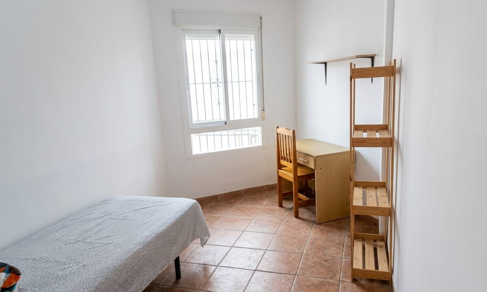

La Pureza
del Espacio.
Santuario residencial en Burriana. Un ejercicio de silencio, luz natural y arquitectura consciente.
Santuario residencial en Burriana. Un ejercicio de silencio, luz natural y arquitectura consciente.

Dormitorios diseñados como refugios de introspección, donde el confort es la prioridad absoluta.
 Materia & Luz
Materia & Luz
 Minimalismo
Minimalismo
 El Umbral
El Umbral
 Serenidad
Serenidad

Equilibrio
La culminación de la experiencia: un mirador privado sobre la calma de Burriana.